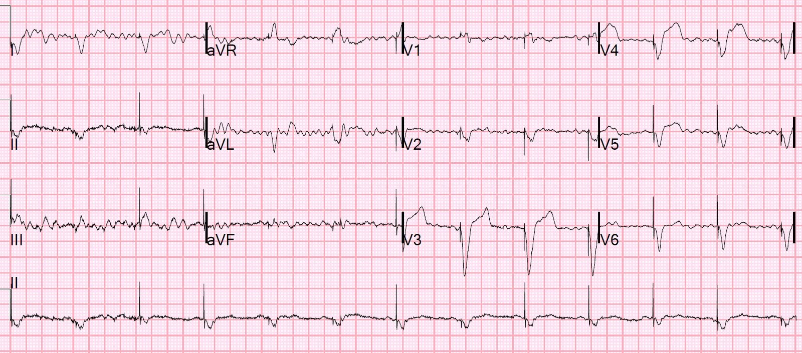
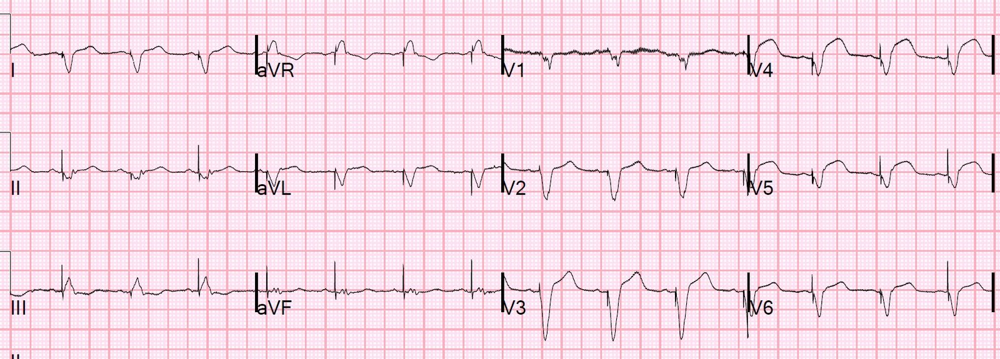
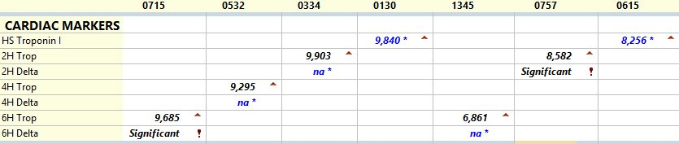

10/12/2020 — “Trả tôi bây giờ, hoặc trả tôi sau”
Bản dịch tiếng Việt của bài "“Pay me now, or pay me later”" – Dr. Smith’s ECG Blog. Giữ nguyên toàn bộ 3 hình ảnh của bản gốc.
Bệnh nhân này đến viện vì phù phổi cấp, không đau ngực.
Đôi chút bệnh sử trước khi xem điện tâm đồ:
Bệnh nhân đã nằm điều trị một tuần ở một bệnh viện khác vì viêm phổi và nhồi máu cơ tim không ST chênh lên (NonSTEMI). Troponin I đạt đỉnh 40 ng/mL, siêu âm tim cho thấy rối loạn vận động thành ở nhiều vùng và EF 35%. Bệnh nhân bị blốc tim độ ba kèm nhịp chậm và phải đặt máy tạo nhịp vĩnh viễn. Troponin cao đến mức đó thường đi kèm với tắc mạch.
Tôi đã xem lại các điện tâm đồ từ bệnh viện đó và chúng không cho thấy OMI. Nhưng nhiều điện tâm đồ ở bệnh nhân bị nhồi máu cơ tim do tắc (OMI) không bộc lộ OMI, kể cả khi chính tôi đọc.
Bệnh nhân chắc chắn đã bị nhồi máu cơ tim, dựa vào troponin I rất cao (tới 40 ng/mL!), và được chẩn đoán nhồi máu cơ tim típ 1.
Tuy nhiên, không rõ vì lý do gì, bệnh nhân không được chụp mạch vành. Không chụp mạch vành thì dĩ nhiên cũng không có can thiệp nào vào mảng xơ vữa bị nứt vỡ, thứ lẽ ra đã gây ra biến cố này.
Đó không phải là thực hành chuẩn, và tôi không biết vì sao việc đó không được thực hiện.
Sau đó, 2 tuần sau, bệnh nhân đến viện vì phù phổi.
Đây là điện tâm đồ:


Bạn nghĩ gì?
Bác sĩ khoa cấp cứu đọc: “Nhịp tạo nhịp thất với ST chênh lên không tương xứng với sóng S đi trước ở cả V4 và V5. Thỏa tiêu chuẩn Sgarbossa cải biên theo Smith ở 2 chuyển đạo (chỉ cần 1), chẩn đoán OMI cấp.”
Smith đọc: như trên.
Đã mời hội chẩn tim mạch.
Bác sĩ tim mạch: “Các dấu hiệu hiện tại và biểu hiện lâm sàng không phải là STEMI chắc chắn. Do có rối loạn vận động thành (WMA) ở nhiều vùng trên điện tâm đồ, điện tâm đồ nền rất có khả năng nhưng các dấu hiệu điện tâm đồ thành trước bên đến nay chưa định hướng được cách điều trị.” – bực mình, phải không? Các bác sĩ tim mạch vẫn chưa chấp nhận rộng rãi tiêu chuẩn Sgarbossa cải biên.
Ca bệnh tiếp diễn
Dù vậy, do đau kéo dài và troponin I ban đầu tăng rất cao (8256 ng/L), bệnh nhân được đưa vào phòng thông tim (cath lab) trong vòng vài giờ.
Troponin lúc vào viện cao như vậy có lẽ vì nó chưa trở về bình thường sau lần nhồi máu cơ tim đã biết trước đó.
Chụp mạch vành
(Các) tổn thương thủ phạm: hẹp vôi hóa 80% ở LAD đoạn gần, dòng chảy TIMI II ở đoạn mạch vùng mỏm.
Bệnh động mạch vành (CAD) hai nhánh, trên một hệ mạch ưu thế trái, vôi hóa nặng
Thủ phạm gây NSTEMI và phù phổi của bệnh nhân chưa chắc chắn, nhưng LAD được cho là có góp phần vào bệnh cảnh và đã được điều trị can thiệp qua da.
Nong bóng (PTCA) thành công lỗ xuất phát/đoạn gần nhánh trung gian (ramus intermedius) bằng bóng 2.0 x 20 mm để khôi phục dòng chảy sau hiện tượng dịch chuyển mảng xơ vữa (plaque shift) liên quan đến PCI lỗ xuất phát LAD.
Điện tâm đồ sau PCI:


ST chênh lên (STE) vẫn tồn tại, đây là dấu hiệu tiên lượng xấu và gợi ý hiện tượng “không tái lưu” (No Reflow), tức là khi các mạch nhỏ hơn ở phía hạ lưu bị bít tắc bởi các khối kết tập tiểu cầu–fibrin.
Diễn biến troponin


Thông thường sau khi mở thông động mạch, troponin thường vọt lên một đỉnh cao.
Có lẽ điều này không xảy ra là do “không tái lưu” (No Reflow).
Siêu âm tim chính thức
Giảm chức năng tâm thu thất trái mức độ nặng. Rối loạn vận động thành khu trú – vách đoạn xa, thành trước và mỏm. Rối loạn vận động thành khu trú – thành trước. Rối loạn vận động thành khu trú – thành dưới.
Kết cục
Đáng tiếc, bệnh nhân tiến triển sốc tim và không qua khỏi.
“Trả tôi bây giờ, hoặc trả tôi sau” (Pay me now or pay me later)
Một trong những người thầy của tôi, một bác sĩ can thiệp, thường nói về NonSTEMI: “Trả tôi bây giờ, hoặc trả tôi sau.” Ý ông là: bệnh nhân NonSTEMI, dù là nhồi máu cơ tim không do tắc, vẫn có tổn thương thủ phạm (trừ những trường hợp hiếm gặp là MINOCA) ngay cả khi động mạch thông hoàn toàn, với dòng chảy TIMI-3. Những tổn thương này cần đặt stent! Việc chụp mạch và đặt stent có thể trì hoãn tới 24-36-72 giờ (tốt nhất không quá 24), nhưng bệnh nhân vẫn cần làm, vì vào một lúc nào đó trong tương lai, mảng xơ vữa bị nứt vỡ có thể lại hình thành huyết khối và kết cục có thể rất xấu.
Có nhiều thử nghiệm ngẫu nhiên so sánh can thiệp với điều trị nội khoa cho NonSTEMI, và trừ một vài ngoại lệ, chúng cho thấy can thiệp cải thiện kết cục, đặc biệt khi có một số đặc điểm nguy cơ cao. Ngay cả ở những bệnh nhân không có kết cục xấu, nhiều người rốt cuộc vẫn cần đặt stent vào một thời điểm sau đó.
Các thử nghiệm này thuộc nhóm chung “Điều trị xâm lấn so với điều trị bảo tồn cho NonSTEMI”.
Vì vậy, nếu bạn không can thiệp trong lần nhập viện này (“trả tôi bây giờ”), thì việc đó sẽ phải làm vào một lúc sau (“trả tôi sau”), khi bệnh nhân bị một lần nhồi máu nữa do chính tổn thương đó (nếu bệnh nhân còn sống sót qua lần ấy!).
Do đó, việc bệnh nhân này, người rõ ràng đã bị nhồi máu cơ tim típ 1 đáng kể, với troponin tăng rất cao, blốc tim và rối loạn vận động thành, lại không được chụp mạch vành là điều khó hiểu. Có lẽ vì bệnh viêm phổi.
Dù sao đi nữa, bệnh nhân quay lại với điện tâm đồ dương tính theo tiêu chuẩn Sgarbossa cải biên và huyết khối LAD, và mặc dù động mạch được tái tưới máu tương đối nhanh, bệnh nhân vẫn không qua khỏi, có lẽ một phần do hiện tượng không tái lưu (No Reflow).
Điều này rất khó xảy ra nếu đã can thiệp vào nhồi máu cơ tim không do tắc (Non-OMI) 2 tuần trước đó.
Những điểm cần học:
1. Nói chung, nhồi máu cơ tim típ I, dù là nhồi máu cơ tim không do tắc (NOMI), cũng nên được chụp mạch vành, và nếu xác định được tổn thương thủ phạm thì nên đặt stent. Dĩ nhiên có vô số yếu tố mà bác sĩ can thiệp cần cân nhắc. Đó là lý do tôi nói đây là một “quy tắc chung”. Quy tắc này được các hướng dẫn của ACC/AHA và ESC tán thành.
2. Tiêu chuẩn Sgarbossa cải biên áp dụng được trong nhịp tạo nhịp thất. Đừng bỏ qua chúng!
3. Đoạn ST không hồi phục sau PCI là dấu hiệu xấu và tương quan chặt với việc vi mạch không được tái tưới máu. Nếu động mạch thượng tâm mạc đã thông, điều này nhiều khả năng là do không tái lưu (No Reflow), tức tắc nghẽn các mạch nhỏ ở phía hạ lưu.
4. Bạn có thể đọc đầy đủ về tái tưới máu và tắc lại trong Chương 27 của cuốn sách của tôi